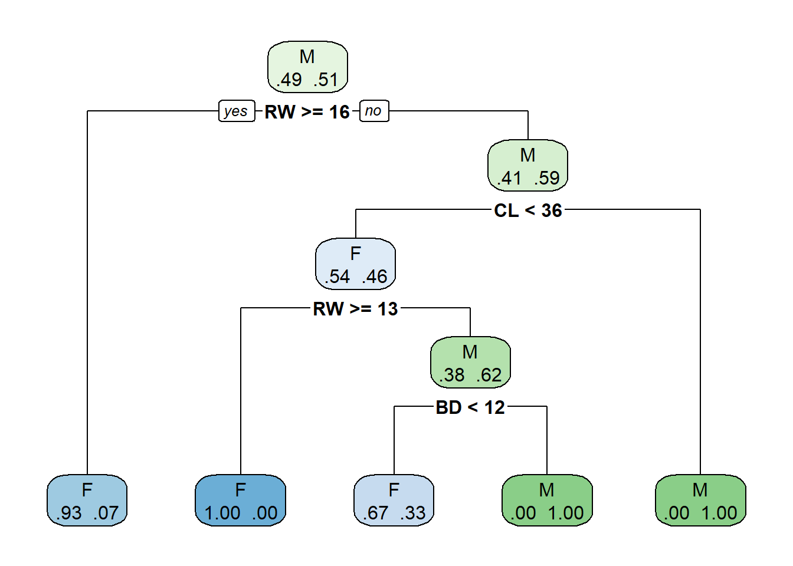
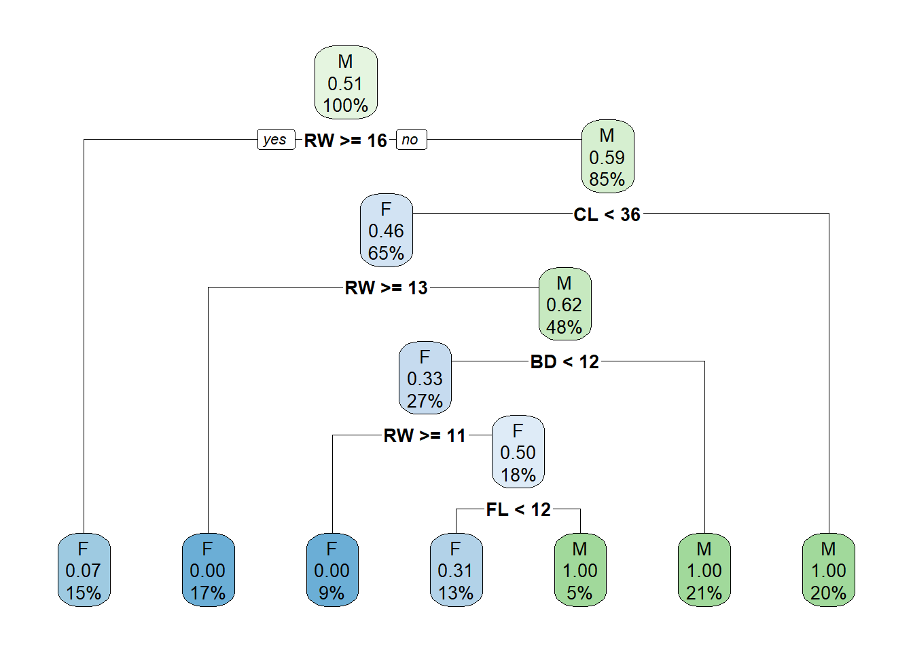
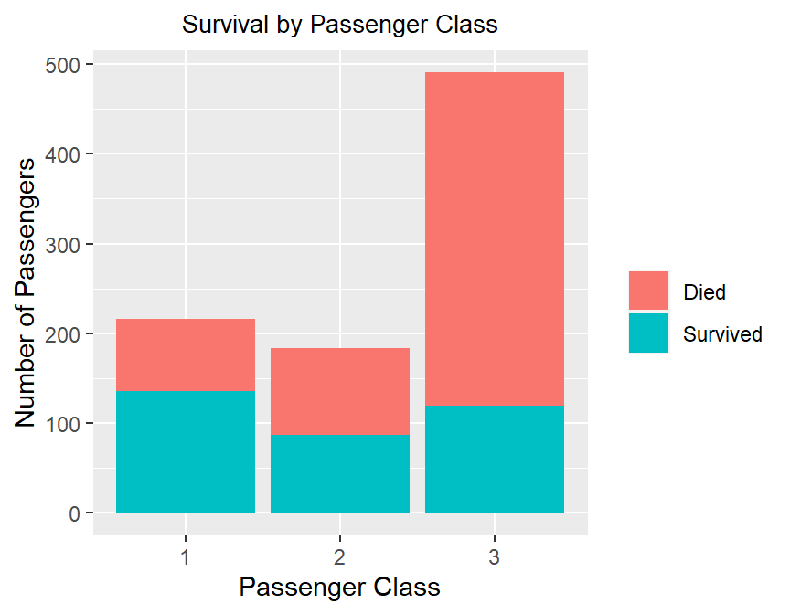
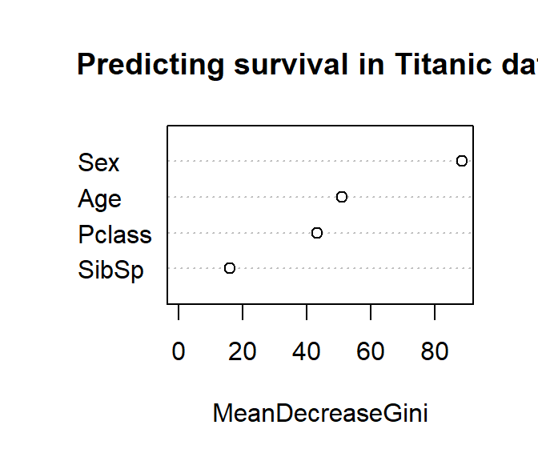

4 Solution
4.1 Exercise 1
Task 1
set.seed(2023)
n <- nrow(crabs)
ind1 <- sample(c(1:n), round(n/2))
ind2 <- sample(c(1:n)[-ind1], round(n/4))
ind3 <- setdiff(c(1:n),c(ind1,ind2))
train.crab <- data.crabs[ind1, ]
valid.crab <- data.crabs[ind2, ]
test.crab <- data.crabs[ind2, ]Task 2
library(rpart)
library(rpart.plot)
crabs.rt <- rpart(sex~FL + RW + CL + CW + BD, data=train.crab, method="class")
rpart.plot(crabs.rt,type=2,extra=4)
Task 3
## n= 100
##
## node), split, n, loss, yval, (yprob)
## * denotes terminal node
##
## 1) root 100 49 M (0.49000000 0.51000000)
## 2) RW>=15.9 15 1 F (0.93333333 0.06666667) *
## 3) RW< 15.9 85 35 M (0.41176471 0.58823529)
## 6) CL< 35.65 65 30 F (0.53846154 0.46153846)
## 12) RW>=12.75 17 0 F (1.00000000 0.00000000) *
## 13) RW< 12.75 48 18 M (0.37500000 0.62500000)
## 26) BD< 11.95 27 9 F (0.66666667 0.33333333) *
## 27) BD>=11.95 21 0 M (0.00000000 1.00000000) *
## 7) CL>=35.65 20 0 M (0.00000000 1.00000000) *Task 5
To check if our model is overfitting, we could compare the classification performance on training and validation sets.
# training performance
train.pred <- predict(crabs.rt, newdata=train.crab[,-1],type="class")
table(train.crab[,1], train.pred)## train.pred
## F M
## F 49 0
## M 10 41# validation performance
valid.pred <- predict(crabs.rt, newdata=valid.crab[,-1],type="class")
table(valid.crab[,1], valid.pred)## valid.pred
## F M
## F 20 3
## M 10 17Given this is a two-class classification problem, all evaluation measures introduced in Week 3 can be applied. In addition, considering that there are more female crabs being misclassified as male in the training data (\(9\) for F->M against \(1\) for M->F), it is preferable to use some measures such as class-specific correct classification rate, sensitivity and specificity, AUC to reflect this issue.
train.table <- table(train.crab[,1], train.pred)
train.table[1,1]/sum(train.table[1,]) # training sensitivity## [1] 1## [1] 0.8039216valid.table <- table(valid.crab[,1], valid.pred)
valid.table[1,1]/sum(valid.table[1,]) # validation sensitivity## [1] 0.8695652## [1] 0.6296296- The training and validation sensitivity are roughly the same, while validation specificity is lower than training specificity. This could be an indication of overfitting.
Task 6
Full_tree <- rpart(sex~FL + RW + CL + CW + BD, data=train.crab, method="class",
control=rpart.control(minsplit=2,minbucket=1,maxdepth=30,cp=-1))Task 7
0.204082*0.49
0.53061*0.49
Here the lowest xerror is 0.42857 with xstd 0.083124. So, when using the minimum error strategy, we would choose the cp value which is larger than the one from Tree 6 and smaller than Tree 5, i.e. between 0.011 and 0.020.
When using the smallest tree strategy, we would choose the cp value from the smallest tree whose xerror is smaller than 0.511694 (0.42857+0.083124). This corresponds to Tree 4, suggesting us to use a cp value between 0.031 and 0.051.
Task 8

# training performance
train.pred <- predict(crabs.rt, newdata=train.crab[,-1],type="class")
train.table <- table(train.crab[,1], train.pred)
train.table## train.pred
## F M
## F 49 0
## M 10 41## [1] 1## [1] 0.8039216# validation performance
valid.pred <- predict(crabs.rt, newdata=valid.crab[,-1],type="class")
valid.table <- table(valid.crab[,1], valid.pred)
valid.table## valid.pred
## F M
## F 20 3
## M 10 17## [1] 0.8695652## [1] 0.6296296While pruning strategy is used, the pruned tree appears more complicated than the previous tree. Therefore, there is a strong sign of over-fitting.
4.2 Exercise 2
Task 1
Let's use str first:
## 'data.frame': 891 obs. of 12 variables:
## $ PassengerId: int 1 2 3 4 5 6 7 8 9 10 ...
## $ Survived : int 0 1 1 1 0 0 0 0 1 1 ...
## $ Pclass : int 3 1 3 1 3 3 1 3 3 2 ...
## $ Name : chr "Braund, Mr. Owen Harris" "Cumings, Mrs. John Bradley (Florence Briggs Thayer)" "Heikkinen, Miss. Laina" "Futrelle, Mrs. Jacques Heath (Lily May Peel)" ...
## $ Sex : chr "male" "female" "female" "female" ...
## $ Age : num 22 38 26 35 35 NA 54 2 27 14 ...
## $ SibSp : int 1 1 0 1 0 0 0 3 0 1 ...
## $ Parch : int 0 0 0 0 0 0 0 1 2 0 ...
## $ Ticket : chr "A/5 21171" "PC 17599" "STON/O2. 3101282" "113803" ...
## $ Fare : num 7.25 71.28 7.92 53.1 8.05 ...
## $ Cabin : chr "" "C85" "" "C123" ...
## $ Embarked : chr "S" "C" "S" "S" ...We shouldn't be happy with some of the variable types, especially when we would have to use some of them for our analysis later on. For example, Name and Ticket are unique identifiers of each passenger, thus providing no predictive power; Fare and Cabin might be redundant given PClass. In addition, for our analysis, we should transform the variables Survived, Pclassand Sex into factors.
train <- titanic_train[,c(2,3,5,6,7)]
train$Survived <- factor(train$Survived, levels=c(0,1), labels=c("Died","Survived"))
train$Pclass <- as.factor(train$Pclass)
train$Sex <- as.factor(train$Sex)Let's start with some exploratory analysis of the data set:
library(skimr);library(tibble)
titanic <- train %>% as_tibble()
my_skim <- skim_with(base=sfl(n=length,n_missing=n_missing),factor=sfl(ordered=NULL),
numeric=sfl(p0=NULL,p100=NULL,hist = NULL))
knit_print(my_skim(titanic))| Name | titanic |
| Number of rows | 891 |
| Number of columns | 5 |
| _______________________ | |
| Column type frequency: | |
| factor | 3 |
| numeric | 2 |
| ________________________ | |
| Group variables | None |
Variable type: factor
| skim_variable | n | n_missing | n_unique | top_counts |
|---|---|---|---|---|
| Survived | 891 | 0 | 2 | Die: 549, Sur: 342 |
| Pclass | 891 | 0 | 3 | 3: 491, 1: 216, 2: 184 |
| Sex | 891 | 0 | 2 | mal: 577, fem: 314 |
Variable type: numeric
| skim_variable | n | n_missing | mean | sd | p25 | p50 | p75 |
|---|---|---|---|---|---|---|---|
| Age | 891 | 177 | 29.70 | 14.53 | 20.12 | 28 | 38 |
| SibSp | 891 | 0 | 0.52 | 1.10 | 0.00 | 0 | 1 |
Note that almost 20% of our data set has missing values in the variable Age.
Let's also have a look at the relationship between survival and the passenger's class.
library(ggplot2)
ggplot(train, aes(Pclass, fill=Survived)) + geom_bar() +
xlab("Passenger Class") + ylab("Number of Passengers") +
ggtitle("Survival by Passenger Class") +
scale_fill_discrete(name = "", labels = c("Died", "Survived")) +
theme(plot.title = element_text(hjust = 0.5, size = 10))
It seems that passengers who were on the first class had a higher probability of surviving compared to the other classes (especially the 3rd one). Since we are a bit curious about this, let's be a bit more specific and find the specific probabilities using R.
##
## 1 2 3
## Died 0.3703704 0.5271739 0.7576375
## Survived 0.6296296 0.4728261 0.2423625It seems that the probability of surviving as a first class passenger is more than twice the probability of surviving as a third class passenger (i.e. \(63\%\) versus \(24\%\)). Not a coincidence that the character Di Caprio played in Titanic, a third class passenger named Jack Dawson, did not survive the accident.
Task 2
set.seed(1)
n <- nrow(titanic_train)
idx <- sample(1:n, round(0.2*n))
val <- train[idx,]
train <- train[-idx,]Task 3
set.seed(1)
bagging <- randomForest(Survived~Pclass+Age+Sex+SibSp, data=train.imputed,
mtry=4, ntree=200)
set.seed(1)
rf <- randomForest(Survived~Pclass+Age+Sex+SibSp, data=train.imputed,
ntree=200)To decide whether to use bagging or random forest, one way is to look at the out-of-bag estimate of error rate, which can be found by printing out the model output (i.e. type bagging and rf directly in R). However, as the class is imbalanced (i.e. the number of observations in each class is different), accuracy may not be the optimal evaluation measure. Here we will use AUC instead.
val.imputed <- na.roughfix(val)
bagging_prob <- predict(bagging, val.imputed, type="prob")
rf_prob <- predict(rf, val.imputed, type="prob")
library(ROCR)
bagging_pred <- prediction(bagging_prob[,2], val$Survived)
bagging_AUC <- performance(bagging_pred, "auc")@y.values[[1]]
rf_pred <- prediction(rf_prob[,2], val$Survived)
rf_AUC <- performance(rf_pred, "auc")@y.values[[1]]
print(c(bagging_AUC,rf_AUC))## [1] 0.8544942 0.8840409It turns out random forest achieves the highest AUC.
Task 4. Below is an example of visualising variable importance of random forest.

# ggplot for variable importance
# library(forcats);library(caret);library(dplyr)
# rf_df <- data_frame(var = rownames(randomForest::importance(rf)),
# MeanDecreaseGini = randomForest::importance(rf)[,1]) %>%
# mutate(var = fct_reorder(var, MeanDecreaseGini, median))
# rf_ggplot <- ggplot(rf_df,aes(var, MeanDecreaseGini)) +
# geom_point() + coord_flip() +
# labs(title = "Predicting survival in Titanic data",
# x = NULL,y = "Average decrease in the Gini Index") +
# theme(plot.title = element_text(hjust = 0.5))
# rf_ggplotAccording to the random forest model, sex is the most important factor, followed by age and passenger. The number of siblings or spouses have little importance in survival.
Task 5
test <- titanic_test[,c(2,4,5,6)]
test$Pclass <- as.factor(test$Pclass)
test$Sex <- as.factor(test$Sex)
test.imputed <- na.roughfix(test)
test.rf <- predict(rf, test.imputed, type="class")The data set comes from the Kaggle competition, which does not provide the test labels to the public. Therefore we cannot further evaluate the test performance.